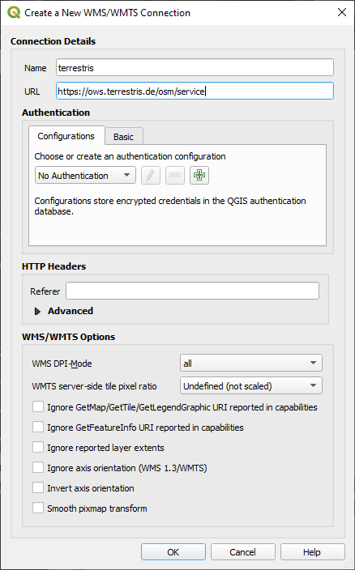
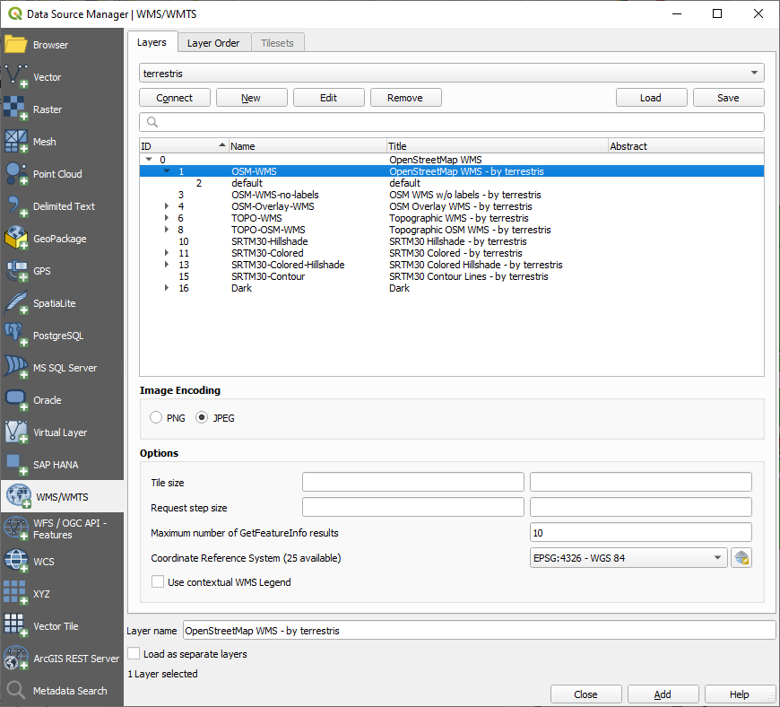
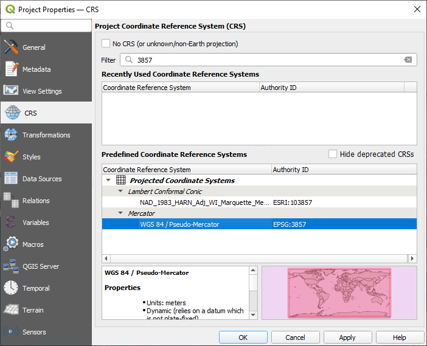

Before starting to add the WMS layer, deactivate “on the fly”
projection (Project ► Properties… ► CRS tab,
check No CRS (or unknown/non-Earth projection).
This may cause the layers to no longer overlap properly, but
don’t worry: we’ll fix that later.
To add WMS layers, click on the button to open the
Data Source Manager dialog and enable the WMS/WMTS tab.
Remember how you connected to a SpatiaLite or GeoPackage database at the
beginning of the course. The landuse, buildings, and
roads layers are stored in a database. To use those layers, you
first needed to connect to the database. Using a WMS is similar, with the
exception that the layers are on a remote server.
To create a new connection to a WMS, click on the New button.
You’ll need a WMS address to continue. There are several free WMS servers
available on the Internet. One of these is terrestris, which makes use of the OpenStreetMap dataset.
To make use of this WMS, set it up in your current dialog, like this:

The value of the Name field should be terrestris.
The value of the URL field should be
https://ows.terrestris.de/osm/service.
Click OK. You should see the new WMS server listed:
Click Connect. In the list below, you should now see these
new entries loaded:
These are all the layers hosted by this WMS server.
Click once on the OSM-WMS layer.
This will display the default Coordinate Reference System in use
and the number of CRSes supported by the dataset:

Since we’re not using EPSG:4326-WGS84 for our map,
let’s find one that meets our needs.
Click the Select CRS button. You will see a standard
Coordinate Reference System Selector dialog
showing all the CRS the data is published with.
We want a projected CRS, so let’s choose WGS 84 / Pseudo-Mercator
with EPSG:3857. You can use the top Filter widget.
Click OK. The Coordinate Reference System associated with
the entry has changed.
Click Add to load the layer in your project using Layer name`
(default is OpenStreetMap WMS - by terrestris).
Close the Data Source Manager dialog if not done automatically
In the Layers panel, click and drag it to the bottom of the list.
Zoom out in order to get a global view of the layers. You will notice that
your layers aren’t located correctly (near west of Africa).
This is because “on the fly” projection is disabled.
Let’s enable the reprojection again, but using the same projection as the
OpenStreetMap WMS layer, which is WGS 84 / Pseudo Mercator.
Open the Project ► Properties… ► CRS tab
Uncheck No CRS (or unknown/non-Earth projection)
Choose WGS 84 / Pseudo Mercator from the list.

Click OK.
Now right-click on one of your own layers in the Layers panel and
click Zoom to layer(s). You should see the Swellendam
area:
Note how the WMS layer’s streets and our own streets overlap.
That’s a good sign!
By now you may have noticed that this WMS layer actually has many features in it.
It has streets, rivers, nature reserves, and so on. What’s more, even though it
looks like it’s made up of vectors, it seems to be a raster, but you can’t
change its symbology. Why is that?
This is how a WMS works: it’s a map, similar to a normal map on paper, that you
receive as an image. What usually happens is that you have vector layers, which
QGIS renders as a map. But using a WMS, those vector layers are on the WMS
server, which renders it as a map and sends that map to you as an image. QGIS
can display this image, but can’t change its symbology, because all that is
handled on the server.
This has several advantages, because you don’t need to worry about the
symbology. It’s already worked out, and should be nice to look at on any
competently designed WMS.
On the other hand, you can’t change the symbology if you don’t like it, and if
things change on the WMS server, then they’ll change on your map as well. This
is why you sometimes want to use a Web Feature Service (WFS) instead, which
gives you vector layers separately, and not as part of a WMS-style map.
This will be covered in the next lesson, however.
First, let’s add another WMS layer.
Part of the difficulty of using WMS is finding a good (free) server.
Find a new WMS at directory.spatineo.com (or elsewhere online).
It must not have associated fees or restrictions,
and must have coverage over the Swellendam study area.
Remember that what you need in order to use a WMS is only its URL
(and preferably some sort of description).
Answer
Spatineo is one of many places you can search for a OGC data.
Type in the text area a name, keyword, location of your interest
to see if you get some working results.
For this lesson, you might want to filter the results to include WMS only.
You may notice that many WMS servers are not always available.
Sometimes this is temporary, sometimes it is permanent.
An example of a WMS server that worked at the time of writing
is the MapServer Demonstration Server WMS
at https://demo.mapserver.org/cgi-bin/wms?SERVICE=WMS&VERSION=1.3.0&REQUEST=GetCapabilities.
It does not require fees or have access constraints, and it is global.
Therefore, it does satisfy the requirements.
Keep in mind, however, that this is merely an example.
There are many other WMS servers to choose from.
Now that you’ve added an inactive map as a backdrop, you’ll be glad to know
that it’s also possible to add features (such as the other vector layers you
added before). Adding features from remote servers is possible by using a Web
Feature Service (WFS). That’s the topic of the next lesson.

 button to open the
Data Source Manager dialog and enable the
button to open the
Data Source Manager dialog and enable the  WMS/WMTS tab.
WMS/WMTS tab.


 Select CRS button. You will see a standard
Coordinate Reference System Selector dialog
showing all the CRS the data is published with.
Select CRS button. You will see a standard
Coordinate Reference System Selector dialog
showing all the CRS the data is published with. Filter widget.
Filter widget.

{kind=link}
{kind=link}